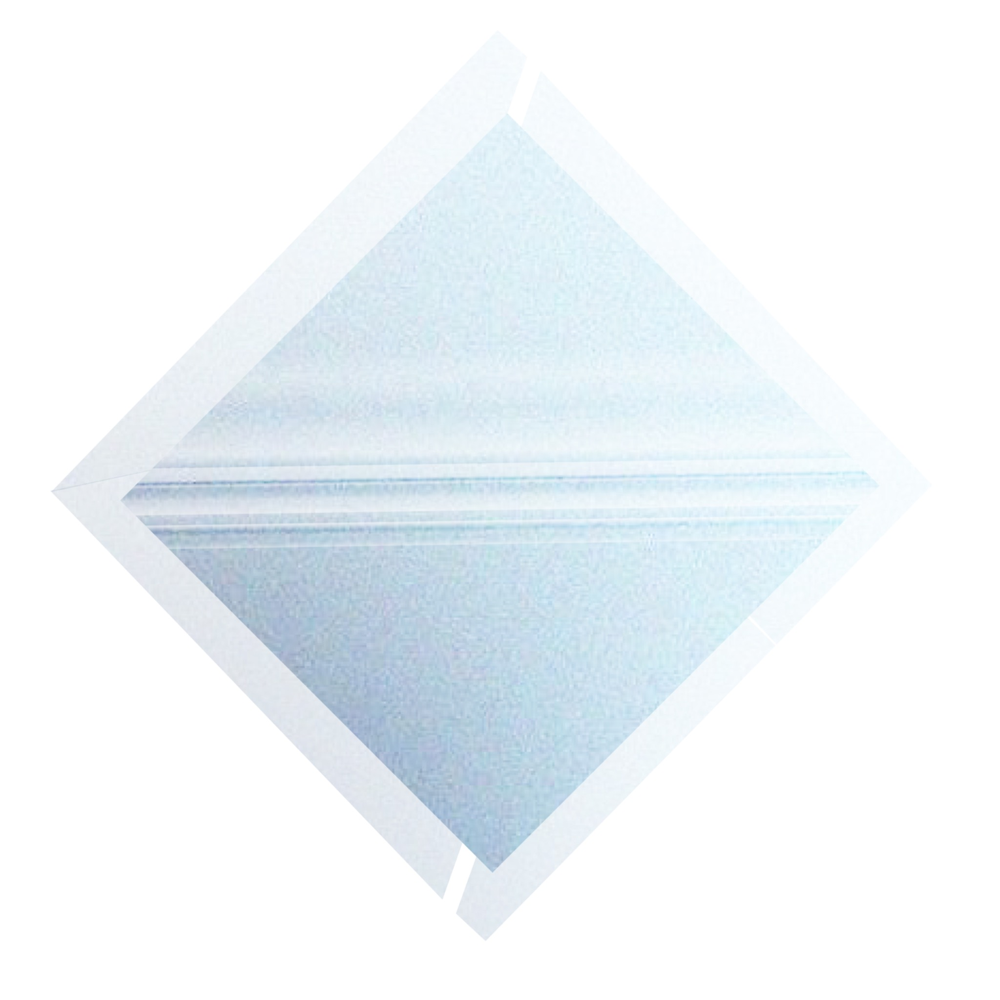
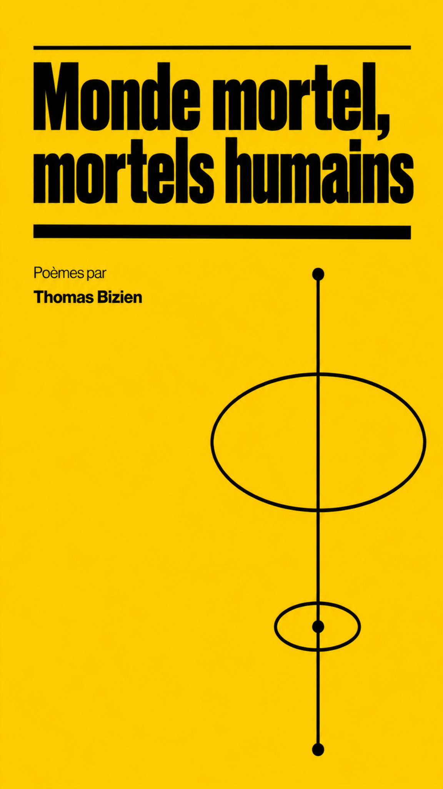
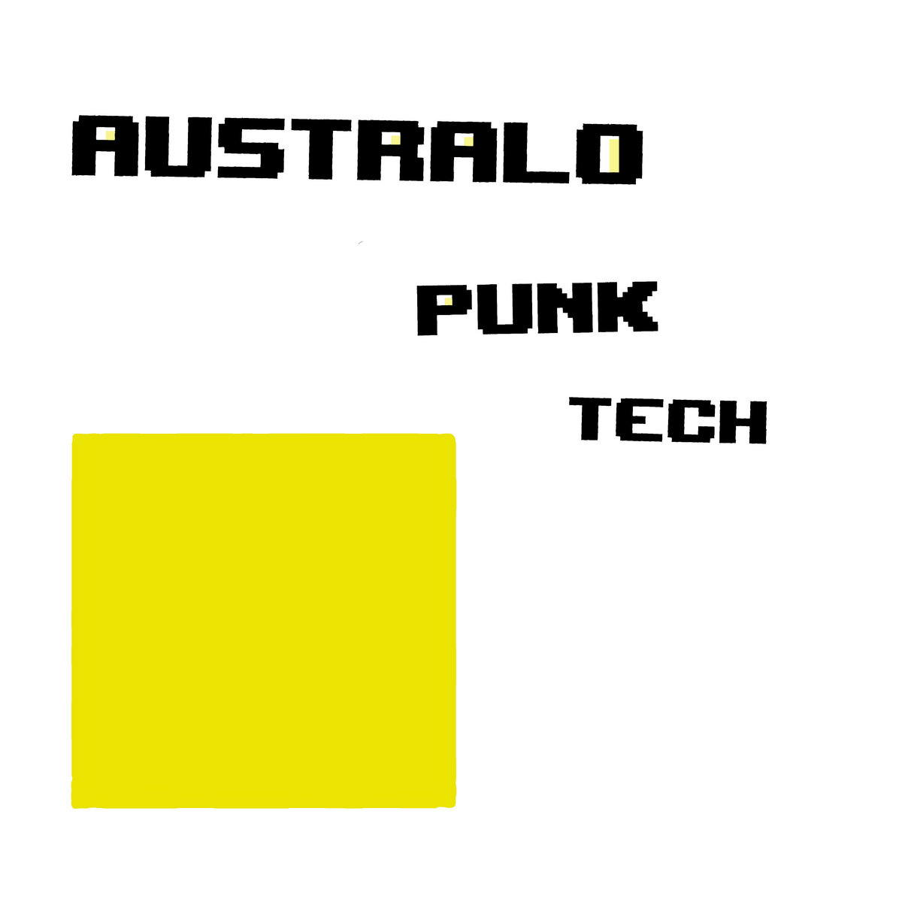
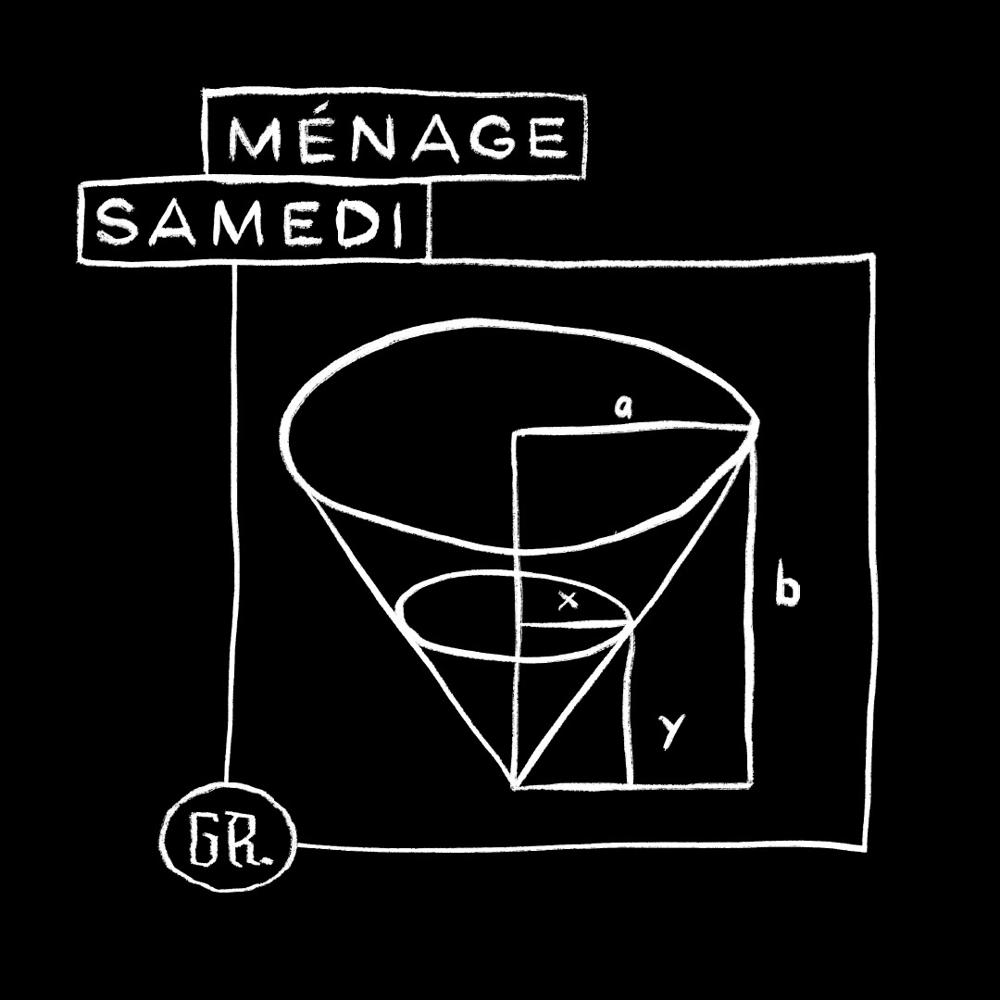
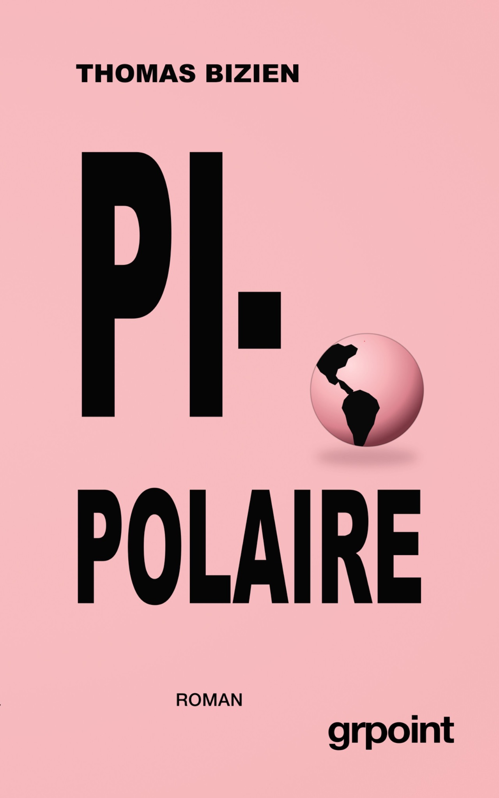

Thomas Bizien
CATALOGUE
2019 —
EMM
Album
J’ai composé EMM comme un album de bribes.
Des pensées qui passent, des conversations inachevées…
Je n’ai pas cherché à raconter une histoire, mais à assembler des fragments capables de dessiner quelque chose.
La musique est électronique. Les mots sont en français.
Les rythmes invitent à danser.
Les textes regardent le monde aller mal.

Monde mortel,
mortels humains
Recueil de poésie
J’ai écrit ce recueil sur un MacBook Pro Intel Core i7 — un processeur largement dimensionné pour le traitement de texte.
Dans l’ensemble, le monde m’était plutôt désagréable. La poésie est venue combler ce manque, du moins partiellement.
Vous trouverez là des poèmes.
Ils m’ont été inspirés par des choses concrètes.
D’une manière générale, j’ai tâché d’éviter les figures de style.

Australo-
Punk-
Tech
EP
Peu de gens le savent, mais il n’existe pas de cotonéasters au Bénin.
« Australopunktech » a comblé ce manque, du moins partiellement.

Ménage samedi
EP
Ménage samedi a été publié en novembre 2022.
Je l’ai composé et produit dans mon studio parisien.
J’ai cherché une écriture électronique dépouillée,
où des nappes de synthétiseurs et une guitare réverbérée
puissent accompagner mon chant en français.

Pi-Polaire
Roman
Avec Pi-Polaire, j’ai raconté l’histoire de Thomas Hutter,
un homme qui ne rêvait que d’une chose : devenir célèbre.
La musique ne lui a pas permis d’atteindre la notoriété.
Il a fini par la trouver ailleurs,
dans la théologie protestante.
À travers son ascension,
je me suis attaché à observer la fabrication des prophètes.
Pour cela, je me suis librement inspiré
du massacre de Jonestown.
Jusqu’à faire se côtoyer la satire et le tragique.
